vignettes/sampleSize_parallel_2A1E.Rmd
sampleSize_parallel_2A1E.RmdThis example, adapted from Example 1 in the PASS manual chapter titled “Biosimilarity Tests for the Difference Between Means Using a Parallel Two-Group Design”, illustrates the process of planning a clinical trial to assess biosimilarity. Specifically, the trial aims to compare blood pressure outcomes between two groups.
Drug B is a well-established biologic drug used to control blood pressure. Its exclusive marketing license has expired, creating an opportunity for other companies to develop biosimilars. Drug A is a new competing drug being developed as a potential biosimilar to Drug B. The goal is to determine whether Drug A meets FDA biosimilarity requirements in terms of safety, purity, and therapeutic response when compared to Drug B.
The study follows a parallel-group design with the following key assumptions:
To implement these parameters in R, the following code snippet can be used:
# Reference group mean blood pressure (Drug B)
mu_r <- setNames(96, "BP")
# Treatment group mean blood pressure (Drug A)
mu_t <- setNames(96 + 2.25, "BP")
# Common within-group standard deviation
sigma <- setNames(18, "BP")
# Lower and upper biosimilarity limits
lequi_lower <- setNames(-27, "BP")
lequi_upper <- setNames(27, "BP")To explore the power of the test across a range of group sample sizes, the researchers plan to calculate the power for group sizes varying from 6 to 20.
To estimate the power for different sample sizes, we use the sampleSize() function. The
function is configured with a power target of 0.90, a type-I error rate
of 0.025, and the specified mean and standard deviation values for the
reference and treatment groups. The optimization method is set to
"step-by-step" to display the achieved power for each
sample size, providing detailed insights into the results.
Below is an example of how the function can be implemented in R:
library(SimTOST)
(N_ss <- sampleSize(
power = 0.90, # Target power
alpha = 0.025, # Type-I error rate
mu_list = list("R" = mu_r, "T" = mu_t), # Means for reference and treatment groups
sigma_list = list("R" = sigma, "T" = sigma), # Standard deviations
list_comparator = list("T_vs_R" = c("R", "T")), # Comparator setup
list_lequi.tol = list("T_vs_R" = lequi_lower), # Lower equivalence limit
list_uequi.tol = list("T_vs_R" = lequi_upper), # Upper equivalence limit
dtype = "parallel", # Study design
ctype = "DOM", # Comparison type
lognorm = FALSE, # Assumes normal distribution
optimization_method = "step-by-step", # Optimization method
ncores = 1, # Single-core processing
nsim = 1000, # Number of simulations
seed = 1234 # Random seed for reproducibility
))
#> Sample Size Calculation Results
#> -------------------------------------------------------------
#> Study Design: parallel trial targeting 90% power with a 2.5% type-I error.
#>
#> Comparisons:
#> R vs. T
#> - Endpoints Tested: BP
#> -------------------------------------------------------------
#> Parameter Value
#> Total Sample Size 26
#> Achieved Power 90.8
#> Power Confidence Interval 88.8 - 92.5
#> -------------------------------------------------------------
# Display iteration results
N_ss$table.iter
#> Index: <n_iter>
#> n_iter n_drop n_R n_T n_total power power_LCI power_UCI
#> <int> <num> <num> <num> <num> <num> <num> <num>
#> 1: 2 0 2 2 4 0.042 0.03079269 0.05685194
#> 2: 3 0 3 3 6 0.071 0.05622292 0.08916283
#> 3: 4 0 4 4 8 0.118 0.09898992 0.14000650
#> 4: 5 0 5 5 10 0.197 0.17305355 0.22331236
#> 5: 6 0 6 6 12 0.335 0.30593958 0.36534479
#> 6: 7 0 7 7 14 0.468 0.43675913 0.49948974
#> 7: 8 0 8 8 16 0.597 0.56577960 0.62746582
#> 8: 9 0 9 9 18 0.698 0.66831899 0.72613905
#> 9: 10 0 10 10 20 0.766 0.73825476 0.79167071
#> 10: 11 0 11 11 22 0.828 0.80284126 0.85059491
#> 11: 12 0 12 12 24 0.885 0.86320172 0.90377751
#> 12: 13 0 13 13 26 0.908 0.88794993 0.92484078We can visualize the power curve for different sample sizes using the following code snippet:
plot(N_ss)
To account for an anticipated dropout rate of 20% in each group, we need to adjust the sample size. The following code demonstrates how to incorporate this adjustment using a custom optimization routine. This routine is designed to find the smallest integer sample size that meets or exceeds the target power. It employs a stepwise search strategy, starting with larger step sizes and progressively refining them as it approaches the solution.
# Adjusted sample size calculation with 20% dropout rate
(N_ss_dropout <- sampleSize(
power = 0.90, # Target power
alpha = 0.025, # Type-I error rate
mu_list = list("R" = mu_r, "T" = mu_t), # Means for reference and treatment groups
sigma_list = list("R" = sigma, "T" = sigma), # Standard deviations
list_comparator = list("T_vs_R" = c("R", "T")), # Comparator setup
list_lequi.tol = list("T_vs_R" = lequi_lower), # Lower equivalence limit
list_uequi.tol = list("T_vs_R" = lequi_upper), # Upper equivalence limit
dropout = c("R" = 0.20, "T" = 0.20), # Expected dropout rates
dtype = "parallel", # Study design
ctype = "DOM", # Comparison type
lognorm = FALSE, # Assumes normal distribution
optimization_method = "fast", # Fast optimization method
ncores = 1, # Single-core processing
nsim = 1000, # Number of simulations
seed = 1234 # Random seed for reproducibility
))
#> Sample Size Calculation Results
#> -------------------------------------------------------------
#> Study Design: parallel trial targeting 90% power with a 2.5% type-I error.
#>
#> Comparisons:
#> R vs. T
#> - Endpoints Tested: BP
#> -------------------------------------------------------------
#> Parameter Value
#> Total Sample Size 32
#> Achieved Power 90.8
#> Power Confidence Interval 88.8 - 92.5
#> -------------------------------------------------------------Previously, finding the required sample size took 12 iterations. With the fast optimizer, the number of iterations is reduced to 8, significantly improving efficiency.